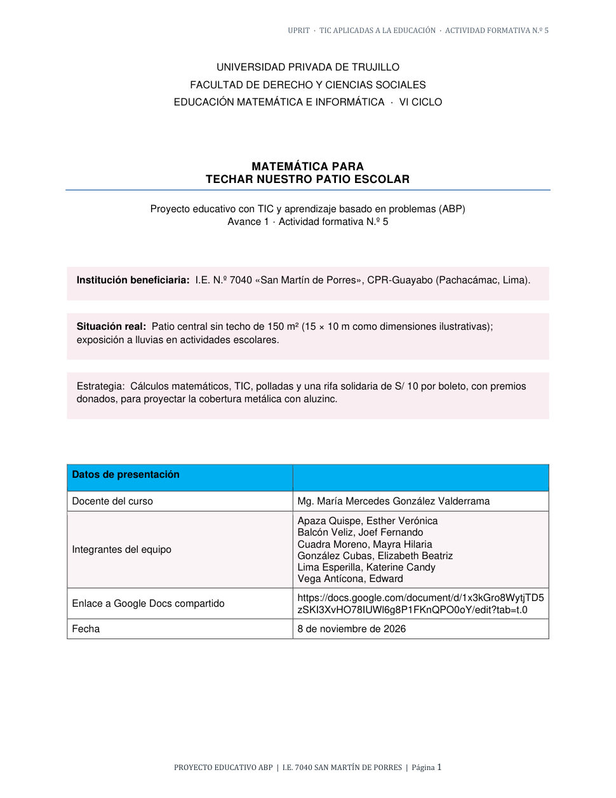

Facultad de Derecho y Ciencias Sociales. Educación Secundaria con mención en Matemática e Informática. Docente: Mg. María Mercedes González Valderrama.
Este portafolio reúne los productos presentados en las seis sesiones del curso, desde la historia y las teorías del aprendizaje con TIC hasta el diseño de un proyecto educativo con aprendizaje basado en problemas (ABP).
Integrantes consignados en las actividades 5 y 6
- Esther Verónica Apaza Quispe
- Joef Fernando Balcón Veliz
- Mayra Hilaria Cuadra Moreno
- Elizabeth Beatriz González Cubas
- Katerine Candy Lima Esperilla
- Edward Vega Antícona
Las sesiones 1 a 3 contienen nóminas propias, que se mantienen en sus archivos originales.

Índice de evidencias
Introducción
La Unidad I reúne una línea de tiempo de herramientas y experiencias vinculadas con la enseñanza de la matemática, un organizador de teorías del aprendizaje, el diseño de un aula virtual sobre cuerpos geométricos para 4.º de secundaria y un recurso interactivo de áreas para 2.º de secundaria.
La Unidad II desarrolla la propuesta académica «Matemática para techar nuestro patio escolar», que utiliza un problema contextualizado de 150 m² para articular cálculos, escenarios de financiamiento, herramientas TIC, ABP, ADDIE, TPACK y evaluación. El diseño se presenta como propuesta documental: no representa una obra ejecutada ni una recaudación realizada.